This exercise uses translations and rotations to estimate ground motion variability from different sources. We begin by selecting a subset of similar ruptures which match a set of criteria (in this case, M6.6, Vertical Strike-Slip with Surface Rupture). Each rupture is then reoriented such that its strike (following the Aki & Richards 1980 convention) is 0 degrees (due North, dipping to the right for normal or reverse ruptures). For each site, ruptures are translated such that their centroid is directly North of the site, and their Joyner-Boore distance (rJB) is as specified (we consider 2 distance[s] here).
We then perform various rotations. We rotate the rupture in place around its centroid, holding the site-to-source centroid path and rJB constant (henceforth 'Rupture Strike'). We also rotate ruptures around the site, holding rJB and source orientation relative to the site constant but sampling different various paths (henceforth 'Path'). We do this for each unique combination of Rupture Strike, Path, Joyner-Boore Distance, Site, and Rupture.
NOTE: This page uses the SCEC BBP to simulate a 1-dimensional velocity structure. Thus we expect no path variability, and plots of path variabilitiy are included only as verification of the method.
| Quantity | Variations | Description |
|---|---|---|
| Rupture | 100 | Unique (but similar in faulting style and magnitude) ruptures which match the given scenario. |
| Site | 10 | Unique site locations. If 3-d, each will have unique velocity profiles. |
| Rupture Strike | 36 | Rupture strike conforming to the Aki & Richards (1980) convention, where dipping faults dip to the right of the rupture. If also rotated about a site, this azimuth is relative to the path. |
| Path | 4 | Path from the site to the centroid of the rupture, in azimuthal degrees (0 is North) |
| Joyner-Boore Distance | 20.0,50.0 km | Shortest horizontal distance between the site and the surface projection of the rupture. |
| Total # Simulations | 288000 | Total number of combinations of the above. |
We condisder 100 events in the catalog match the following criteria:
| Name | Location | Vs30 (m/s) | Z1.0 (km) | Z2.5 (km) |
|---|---|---|---|---|
| LAPD | 34.557, -118.125 | 863 | N/A | N/A |
| PAS | 34.148426, -118.17119 | 863 | N/A | N/A |
| SBSM | 34.064987, -117.29201 | 863 | N/A | N/A |
| SMCA | 34.00909, -118.48939 | 863 | N/A | N/A |
| STNI | 33.93088, -118.17881 | 863 | N/A | N/A |
| USC | 34.0192, -118.286 | 863 | N/A | N/A |
| WNGC | 34.041824, -118.0653 | 863 | N/A | N/A |
| s119 | 34.55314, -118.72826 | 863 | N/A | N/A |
| s279 | 34.37809, -118.34757 | 863 | N/A | N/A |
| s480 | 34.15755, -117.87389 | 863 | N/A | N/A |
| Type | Notation | Distance | 3s Calc. Std. Dev. | 5s Calc. Std. Dev. | 7.5s Calc. Std. Dev. | 10s Calc. Std. Dev. |
|---|---|---|---|---|---|---|
| Path-to-path | φP2P | 20 km | 0 | 0 | 0 | 0 |
| Path-to-path | φP2P | 50 km | 0 | 0 | 0 | 0 |
| Source-strike | φs | 20 km | 0.37 | 0.4 | 0.31 | 0.23 |
| Source-strike | φs | 50 km | 0.45 | 0.48 | 0.51 | 0.53 |
| Within-event | φ | 20 km | 0.37 | 0.4 | 0.31 | 0.23 |
| Within-event | φ | 50 km | 0.45 | 0.48 | 0.51 | 0.53 |
| Between-events, single-path | τ0 | 20 km | 0.33 | 0.35 | 0.42 | 0.42 |
| Between-events, single-path | τ0 | 50 km | 0.33 | 0.4 | 0.44 | 0.43 |
| Between-events | τ | 20 km | 0.44 | 0.46 | 0.48 | 0.45 |
| Between-events | τ | 50 km | 0.5 | 0.55 | 0.62 | 0.64 |
| Site-to-site | φS2S | 20 km | 0.01 | 0 | 0 | 0 |
| Site-to-site | φS2S | 50 km | 0.01 | 0.01 | 0 | 0 |
Path-to-path variability, denoted φP2P in Al Atik 2010, is computed from ground motion residuals where the following quantities are held constant:
and the following quantities vary:
Here is an exmample with 5 rotations, which would be repeated for each combination of Site, Joyner-Boore Distance, Rupture, Rupture Strike
Standard deviation is computed and tabulated separately for each site and distance, then a total standard deviation is computed from all site and distances and reported in the "ALL SITES" row.
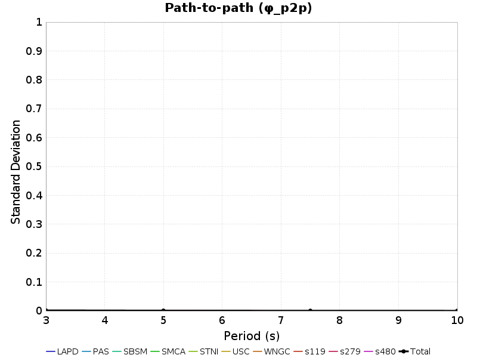
| Site | 3s φP2P | Total | Mean | Median | Range | 5s φP2P | Total | Mean | Median | Range | 7.5s φP2P | Total | Mean | Median | Range | 10s φP2P | Total | Mean | Median | Range |
|---|---|---|---|---|---|---|---|---|---|---|---|---|---|---|---|---|---|---|---|---|
| LAPD | 0 | 0 | 0 | [0 0.04] | 0 | 0 | 0 | [0 0.04] | 0 | 0 | 0 | [0 0.02] | 0 | 0 | 0 | [0 0.01] | ||||
| PAS | 0 | 0 | 0 | [0 0.04] | 0 | � | 0 | [0 0.02] | 0 | 0 | 0 | [0 0.01] | 0 | 0 | 0 | [0 0.01] | ||||
| SBSM | 0 | 0 | 0 | [0 0.04] | 0 | 0 | 0 | [0 0.03] | 0 | 0 | 0 | [0 0.02] | 0 | 0 | 0 | [0 0.01] | ||||
| SMCA | 0 | � | 0 | [0 0.04] | 0 | 0 | 0 | [0 0.03] | 0 | 0 | 0 | [0 0.01] | 0 | 0 | 0 | [0 0.02] | ||||
| STNI | 0 | � | 0 | [0 0.04] | 0 | 0 | 0 | [0 0.03] | 0 | 0 | 0 | [0 0.01] | 0 | 0 | 0 | [0 0.01] | ||||
| USC | 0 | 0 | 0 | [0 0.04] | 0 | 0 | 0 | [0 0.03] | 0 | 0 | 0 | [0 0.01] | 0 | 0 | 0 | [0 0.02] | ||||
| WNGC | 0 | 0 | 0 | [0 0.04] | 0 | 0 | 0 | [0 0.03] | 0 | 0 | 0 | [0 0.02] | 0 | 0 | 0 | [0 0.01] | ||||
| s119 | 0 | 0 | 0 | [0 0.04] | 0 | 0 | 0 | [0 0.03] | 0 | 0 | 0 | [0 0.01] | 0 | 0 | 0 | [0 0.01] | ||||
| s279 | 0 | � | 0 | [0 0.04] | 0 | 0 | 0 | [0 0.03] | 0 | 0 | 0 | [0 0.02] | 0 | 0 | 0 | [0 0.01] | ||||
| s480 | 0 | 0 | 0 | [0 0.03] | 0 | 0 | 0 | [0 0.03] | 0 | 0 | 0 | [0 0.02] | 0 | 0 | 0 | [0 0.01] | ||||
| ALL SITES | 0 | � | 0 | [0 0.04] | 0 | � | 0 | [0 0.04] | 0 | 0 | 0 | [0 0.02] | 0 | 0 | 0 | [0 0.02] |
| 3s | 5s |
|---|---|
| 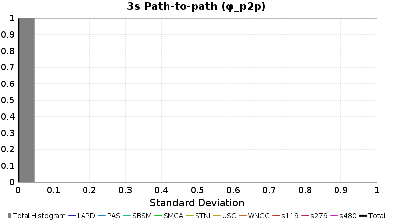 | 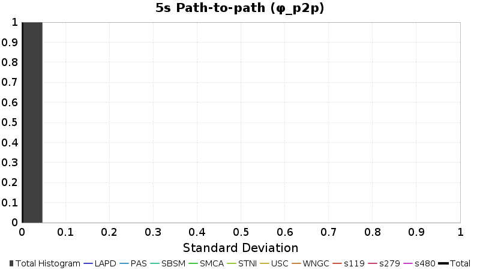 |
| 7.5s | 10s |
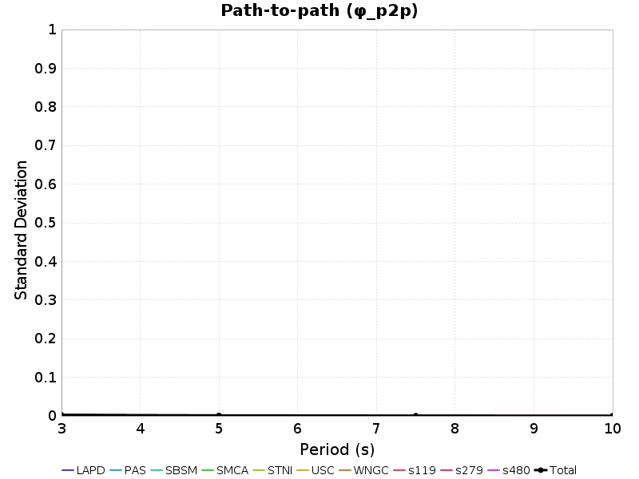
| Site | 3s φP2P | Total | Mean | Median | Range | 5s φP2P | Total | Mean | Median | Range | 7.5s φP2P | Total | Mean | Median | Range | 10s φP2P | Total | Mean | Median | Range |
|---|---|---|---|---|---|---|---|---|---|---|---|---|---|---|---|---|---|---|---|---|
| LAPD | 0 | 0 | 0 | [0 0.06] | 0 | 0 | 0 | [0 0.03] | 0 | 0 | 0 | [0 0.02] | 0 | 0 | 0 | [0 0.01] | ||||
| PAS | 0 | 0 | 0 | [0 0.06] | 0 | 0 | 0 | [0 0.05] | 0 | 0 | 0 | [0 0.02] | 0 | 0 | 0 | [0 0.01] | ||||
| SBSM | 0 | 0 | 0 | [0 0.13] | 0 | � | 0 | [0 0.05] | 0 | 0 | 0 | [0 0.02] | 0 | 0 | 0 | [0 0.01] | ||||
| SMCA | 0 | 0 | 0 | [0 0.11] | 0 | � | 0 | [0 0.04] | 0 | 0 | 0 | [0 0.02] | 0 | 0 | 0 | [0 0.02] | ||||
| STNI | 0 | 0 | 0 | [0 0.11] | 0 | 0 | 0 | [0 0.06] | 0 | 0 | 0 | [0 0.03] | 0 | 0 | 0 | [0 0.02] | ||||
| USC | 0 | 0 | 0 | [0 0.11] | 0 | 0 | 0 | [0 0.05] | 0 | 0 | 0 | [0 0.03] | 0 | 0 | 0 | [0 0.01] | ||||
| WNGC | 0 | 0 | 0 | [0 0.05] | 0 | � | 0 | [0 0.06] | 0 | 0 | 0 | [0 0.04] | 0 | 0 | 0 | [0 0.05] | ||||
| s119 | 0 | 0 | 0 | [0 0.08] | 0 | � | 0 | [0 0.04] | 0 | 0 | 0 | [0 0.02] | 0 | 0 | 0 | [0 0.03] | ||||
| s279 | 0 | 0 | 0 | [0 0.06] | 0 | 0 | 0 | [0 0.04] | 0 | 0 | 0 | [0 0.02] | 0 | 0 | 0 | [0 0.02] | ||||
| s480 | 0 | 0 | 0 | [0 0.09] | 0 | 0 | 0 | [0 0.05] | 0 | 0 | 0 | [0 0.03] | 0 | 0 | 0 | [0 0.02] | ||||
| ALL SITES | 0 | 0 | 0 | [0 0.13] | 0 | � | 0 | [0 0.06] | 0 | 0 | 0 | [0 0.04] | 0 | 0 | 0 | [0 0.05] |
| 3s | 5s |
|---|---|
| 7.5s | 10s |
| 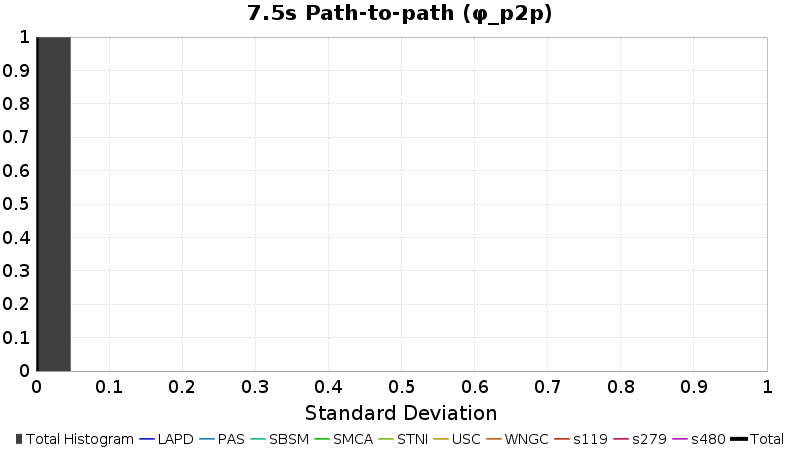 |
Source-strike variability, denoted φs, is computed from ground motion residuals where the following quantities are held constant:
and the following quantities vary:
Here is an exmample with 5 rotations, which would be repeated for each combination of Site, Joyner-Boore Distance, Rupture, Path 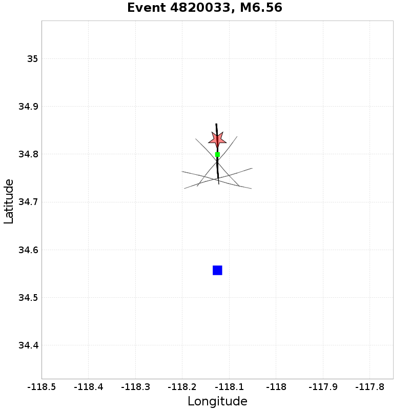
Standard deviation is computed and tabulated separately for each site and distance, then a total standard deviation is computed from all site and distances and reported in the "ALL SITES" row.

| Site | 3s φs | Total | Mean | Median | Range | 5s φs | Total | Mean | Median | Range | 7.5s φs | Total | Mean | Median | Range | 10s φs | Total | Mean | Median | Range |
|---|---|---|---|---|---|---|---|---|---|---|---|---|---|---|---|---|---|---|---|---|
| LAPD | 0.37 | 0.37 | 0.36 | [0.17 0.6] | 0.4 | 0.39 | 0.39 | [0.16 0.6] | 0.31 | 0.31 | 0.3 | [0.09 0.52] | 0.23 | 0.22 | 0.2 | [0.1 0.41] | ||||
| PAS | 0.37 | 0.37 | 0.36 | [0.17 0.6] | 0.4 | 0.39 | 0.39 | [0.16 0.6] | 0.31 | 0.31 | 0.3 | [0.09 0.52] | 0.23 | 0.22 | 0.2 | [0.1 0.41] | ||||
| SBSM | 0.37 | 0.37 | 0.36 | [0.17 0.6] | 0.4 | 0.39 | 0.39 | [0.16 0.6] | 0.31 | 0.31 | 0.3 | [0.09 0.52] | 0.23 | 0.22 | 0.21 | [0.1 0.41] | ||||
| SMCA | 0.37 | 0.37 | 0.36 | [0.17 0.6] | 0.4 | 0.39 | 0.39 | [0.16 0.6] | 0.31 | 0.31 | 0.3 | [0.09 0.52] | 0.23 | 0.22 | 0.2 | [0.1 0.41] | ||||
| STNI | 0.37 | 0.37 | 0.36 | [0.17 0.61] | 0.4 | 0.39 | 0.39 | [0.16 0.6] | 0.31 | 0.31 | 0.3 | [0.09 0.52] | 0.23 | 0.22 | 0.2 | [0.1 0.41] | ||||
| USC | 0.37 | 0.37 | 0.36 | [0.16 0.6] | 0.4 | 0.39 | 0.39 | [0.16 0.6] | 0.31 | 0.31 | 0.3 | [0.09 0.52] | 0.23 | 0.22 | 0.2 | [0.1 0.41] | ||||
| WNGC | 0.37 | 0.37 | 0.36 | [0.17 0.6] | 0.4 | 0.39 | 0.39 | [0.16 0.6] | 0.31 | 0.31 | 0.3 | [0.09 0.52] | 0.23 | 0.22 | 0.2 | [0.1 0.41] | ||||
| s119 | 0.37 | 0.37 | 0.36 | [0.17 0.61] | 0.4 | 0.39 | 0.39 | [0.16 0.6] | 0.31 | 0.31 | 0.3 | [0.09 0.52] | 0.23 | 0.22 | 0.2 | [0.1 0.41] | ||||
| s279 | 0.37 | 0.37 | 0.36 | [0.17 0.6] | 0.4 | 0.39 | 0.39 | [0.16 0.6] | 0.31 | 0.31 | 0.3 | [0.08 0.52] | 0.23 | 0.22 | 0.2 | [0.1 0.41] | ||||
| s480 | 0.37 | 0.37 | 0.36 | [0.17 0.6] | 0.4 | 0.39 | 0.39 | [0.16 0.6] | 0.31 | 0.31 | 0.3 | [0.09 0.52] | 0.23 | 0.22 | 0.2 | [0.1 0.41] | ||||
| ALL SITES | 0.37 | 0.37 | 0.36 | [0.16 0.61] | 0.4 | 0.39 | 0.39 | [0.16 0.6] | 0.31 | 0.31 | 0.3 | [0.08 0.52] | 0.23 | 0.22 | 0.2 | [0.1 0.41] |
| 3s | 5s |
|---|---|
| 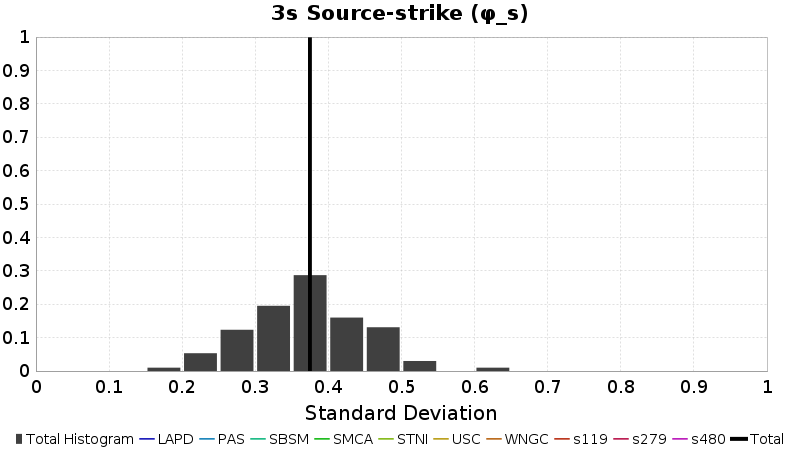 | 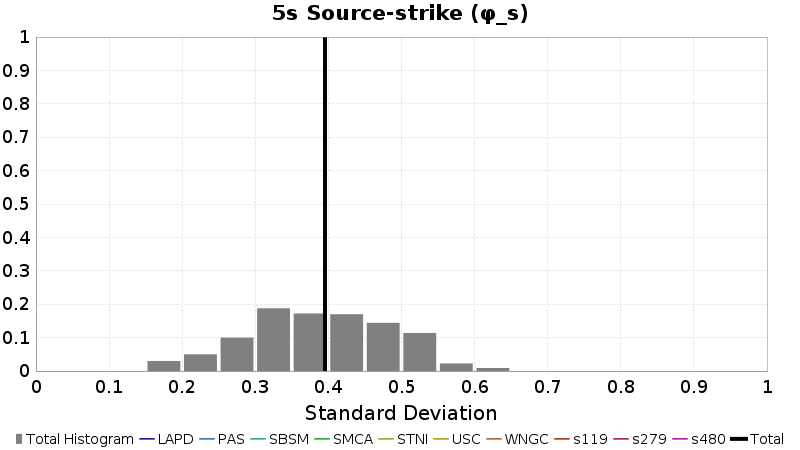 |
| 7.5s | 10s |
| 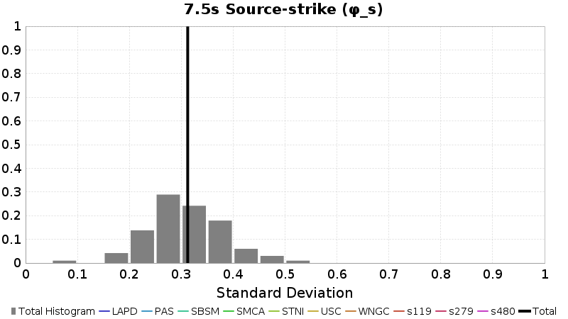 | 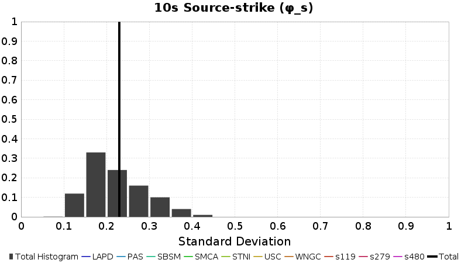 |
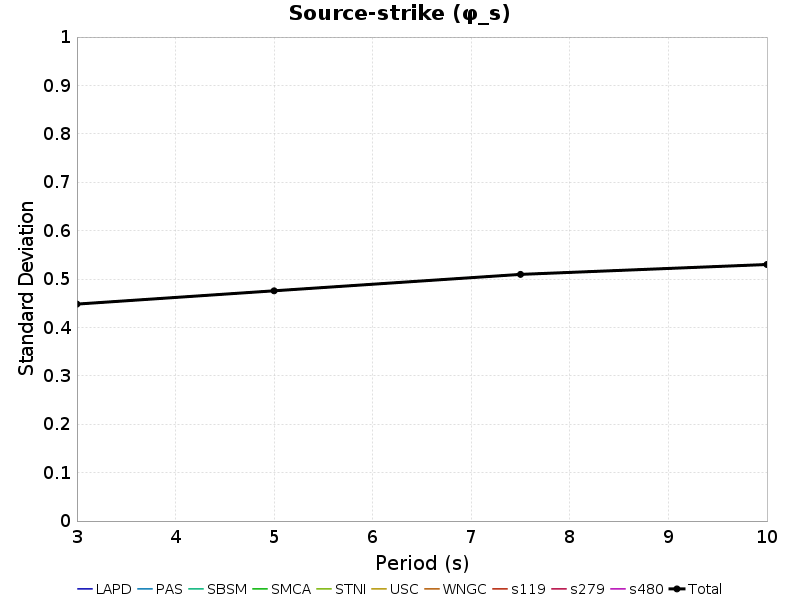
| Site | 3s φs | Total | Mean | Median | Range | 5s φs | Total | Mean | Median | Range | 7.5s φs | Total | Mean | Median | Range | 10s φs | Total | Mean | Median | Range |
|---|---|---|---|---|---|---|---|---|---|---|---|---|---|---|---|---|---|---|---|---|
| LAPD | 0.45 | 0.45 | 0.44 | [0.25 0.68] | 0.48 | 0.47 | 0.47 | [0.29 0.74] | 0.51 | 0.51 | 0.51 | [0.31 0.71] | 0.53 | 0.53 | 0.56 | [0.2 0.67] | ||||
| PAS | 0.45 | 0.45 | 0.45 | [0.25 0.68] | 0.48 | 0.47 | 0.47 | [0.29 0.74] | 0.51 | 0.51 | 0.51 | [0.31 0.71] | 0.53 | 0.53 | 0.56 | [0.19 0.67] | ||||
| SBSM | 0.45 | 0.45 | 0.44 | [0.25 0.68] | 0.48 | 0.47 | 0.47 | [0.29 0.74] | 0.51 | 0.51 | 0.51 | [0.31 0.71] | 0.53 | 0.53 | 0.56 | [0.19 0.67] | ||||
| SMCA | 0.45 | 0.45 | 0.45 | [0.25 0.68] | 0.48 | 0.47 | 0.47 | [0.29 0.74] | 0.51 | 0.51 | 0.51 | [0.31 0.71] | 0.53 | 0.53 | 0.56 | [0.19 0.67] | ||||
| STNI | 0.45 | 0.45 | 0.45 | [0.25 0.68] | 0.48 | 0.47 | 0.47 | [0.29 0.74] | 0.51 | 0.51 | 0.51 | [0.31 0.71] | 0.53 | 0.53 | 0.56 | [0.19 0.67] | ||||
| USC | 0.45 | 0.45 | 0.45 | [0.25 0.68] | 0.48 | 0.47 | 0.47 | [0.29 0.74] | 0.51 | 0.51 | 0.51 | [0.31 0.71] | 0.53 | 0.53 | 0.56 | [0.19 0.67] | ||||
| WNGC | 0.45 | 0.45 | 0.45 | [0.25 0.68] | 0.48 | 0.47 | 0.47 | [0.29 0.74] | 0.51 | 0.51 | 0.51 | [0.31 0.71] | 0.53 | 0.53 | 0.56 | [0.19 0.67] | ||||
| s119 | 0.45 | 0.45 | 0.44 | [0.25 0.68] | 0.48 | 0.47 | 0.47 | [0.29 0.74] | 0.51 | 0.51 | 0.51 | [0.31 0.7] | 0.53 | 0.53 | 0.56 | [0.19 0.67] | ||||
| s279 | 0.45 | 0.45 | 0.44 | [0.25 0.68] | 0.48 | 0.47 | 0.47 | [0.29 0.74] | 0.51 | 0.51 | 0.51 | [0.31 0.71] | 0.53 | 0.53 | 0.56 | [0.2 0.67] | ||||
| s480 | 0.45 | 0.45 | 0.45 | [0.25 0.68] | 0.48 | 0.47 | 0.47 | [0.29 0.74] | 0.51 | 0.51 | 0.51 | [0.31 0.71] | 0.53 | 0.53 | 0.56 | [0.19 0.67] | ||||
| ALL SITES | 0.45 | 0.45 | 0.45 | [0.25 0.68] | 0.48 | 0.47 | 0.47 | [0.29 0.74] | 0.51 | 0.51 | 0.51 | [0.31 0.71] | 0.53 | 0.53 | 0.56 | [0.19 0.67] |
| 3s | 5s |
|---|---|
| 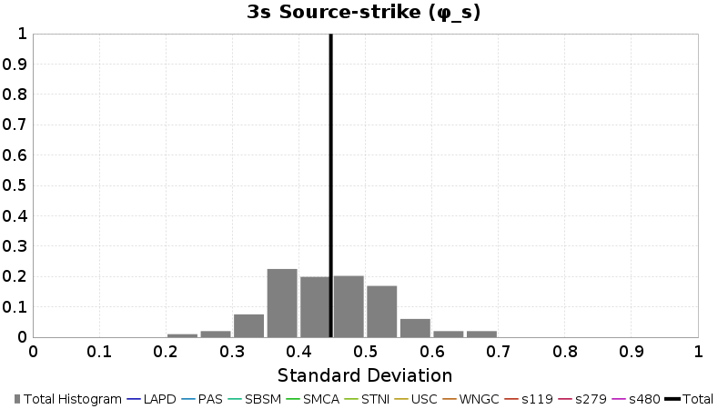 | 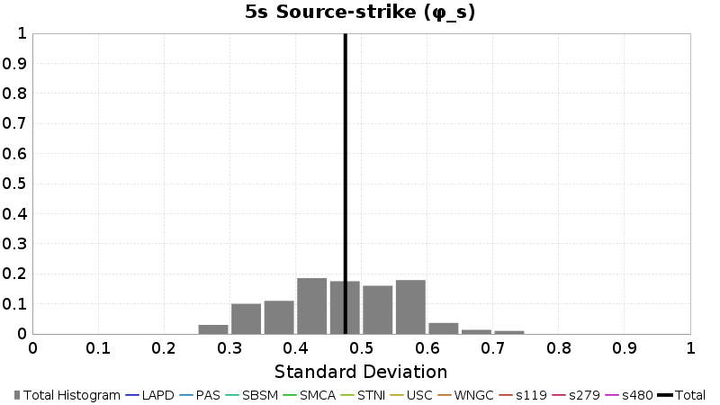 |
| 7.5s | 10s |
| 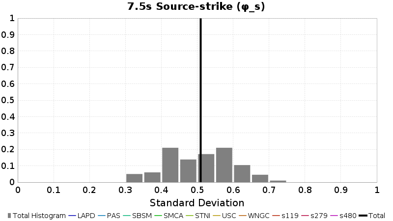 | 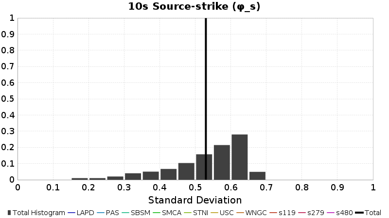 |
Within-event variability, denoted φ in Al Atik 2010, is computed from ground motion residuals where the following quantities are held constant:
and the following quantities vary:
Here is an exmample with 5 rotations, which would be repeated for each combination of Site, Joyner-Boore Distance, Rupture 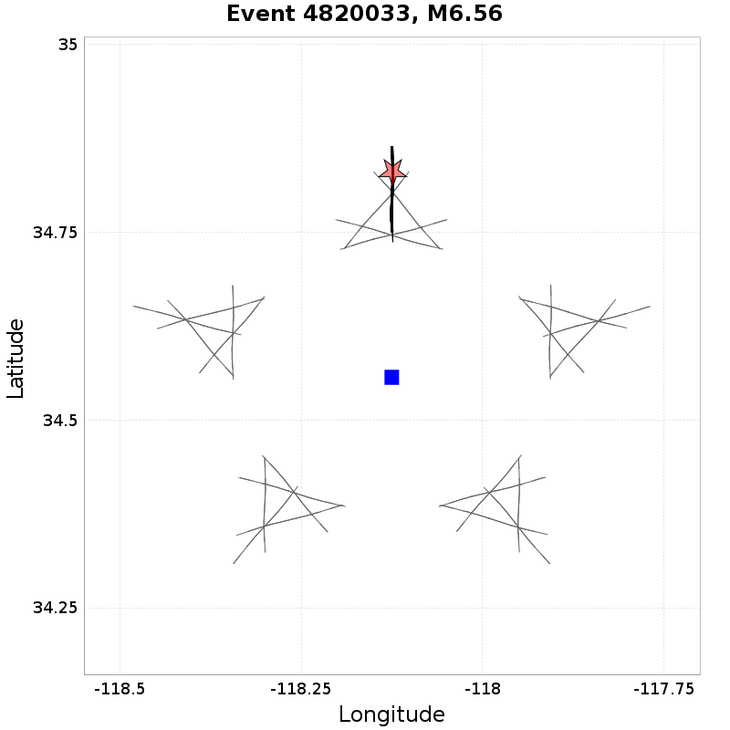
Standard deviation is computed and tabulated separately for each site and distance, then a total standard deviation is computed from all site and distances and reported in the "ALL SITES" row.
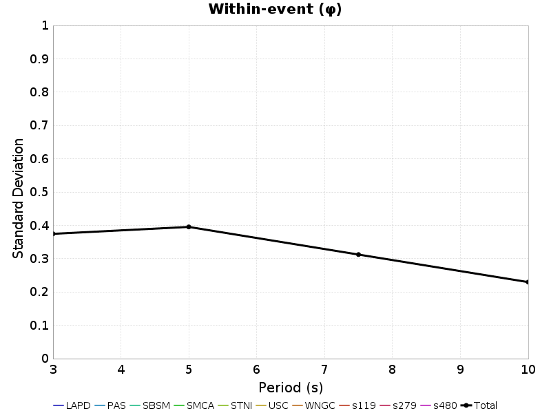
| Site | 3s φ | Total | Mean | Median | Range | 5s φ | Total | Mean | Median | Range | 7.5s φ | Total | Mean | Median | Range | 10s φ | Total | Mean | Median | Range |
|---|---|---|---|---|---|---|---|---|---|---|---|---|---|---|---|---|---|---|---|---|
| LAPD | 0.37 | 0.37 | 0.36 | [0.17 0.6] | 0.4 | 0.39 | 0.39 | [0.16 0.59] | 0.31 | 0.31 | 0.3 | [0.08 0.51] | 0.23 | 0.22 | 0.2 | [0.1 0.41] | ||||
| PAS | 0.37 | 0.37 | 0.36 | [0.17 0.6] | 0.4 | 0.39 | 0.39 | [0.16 0.59] | 0.31 | 0.31 | 0.3 | [0.08 0.51] | 0.23 | 0.22 | 0.2 | [0.1 0.41] | ||||
| SBSM | 0.37 | 0.37 | 0.36 | [0.17 0.6] | 0.4 | 0.39 | 0.38 | [0.16 0.59] | 0.31 | 0.31 | 0.3 | [0.08 0.51] | 0.23 | 0.22 | 0.2 | [0.1 0.41] | ||||
| SMCA | 0.37 | 0.37 | 0.36 | [0.16 0.6] | 0.4 | 0.39 | 0.39 | [0.16 0.6] | 0.31 | 0.31 | 0.3 | [0.09 0.51] | 0.23 | 0.22 | 0.2 | [0.1 0.41] | ||||
| STNI | 0.37 | 0.37 | 0.36 | [0.16 0.6] | 0.4 | 0.39 | 0.39 | [0.16 0.59] | 0.31 | 0.31 | 0.3 | [0.08 0.51] | 0.23 | 0.22 | 0.2 | [0.1 0.41] | ||||
| USC | 0.37 | 0.37 | 0.36 | [0.16 0.6] | 0.4 | 0.39 | 0.39 | [0.16 0.6] | 0.31 | 0.31 | 0.3 | [0.08 0.51] | 0.23 | 0.22 | 0.2 | [0.1 0.41] | ||||
| WNGC | 0.37 | 0.37 | 0.36 | [0.17 0.6] | 0.4 | 0.39 | 0.39 | [0.16 0.59] | 0.31 | 0.31 | 0.3 | [0.08 0.51] | 0.23 | 0.22 | 0.2 | [0.1 0.41] | ||||
| s119 | 0.37 | 0.37 | 0.36 | [0.17 0.6] | 0.4 | 0.39 | 0.39 | [0.16 0.59] | 0.31 | 0.31 | 0.3 | [0.08 0.51] | 0.23 | 0.22 | 0.2 | [0.1 0.41] | ||||
| s279 | 0.37 | 0.37 | 0.36 | [0.17 0.6] | 0.4 | 0.39 | 0.38 | [0.16 0.59] | 0.31 | 0.31 | 0.3 | [0.08 0.51] | 0.23 | 0.22 | 0.2 | [0.1 0.41] | ||||
| s480 | 0.37 | 0.37 | 0.36 | [0.17 0.6] | 0.4 | 0.39 | 0.39 | [0.16 0.59] | 0.31 | 0.31 | 0.3 | [0.08 0.51] | 0.23 | 0.22 | 0.2 | [0.1 0.41] | ||||
| ALL SITES | 0.37 | 0.37 | 0.36 | [0.16 0.6] | 0.4 | 0.39 | 0.39 | [0.16 0.6] | 0.31 | 0.31 | 0.3 | [0.08 0.51] | 0.23 | 0.22 | 0.2 | [0.1 0.41] |
| 3s | 5s |
|---|---|
 | 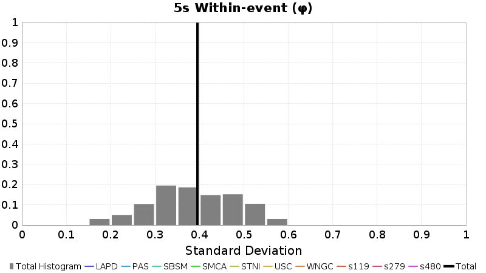 |
| 7.5s | 10s |
| 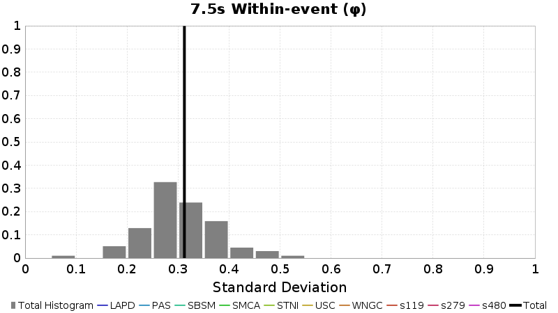 | 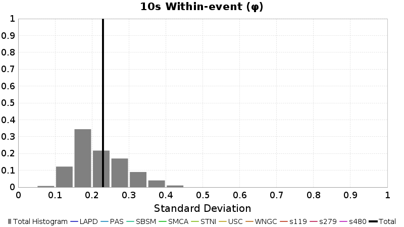 |
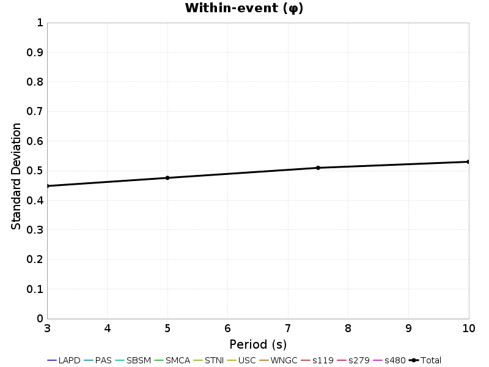
| Site | 3s φ | Total | Mean | Median | Range | 5s φ | Total | Mean | Median | Range | 7.5s φ | Total | Mean | Median | Range | 10s φ | Total | Mean | Median | Range |
|---|---|---|---|---|---|---|---|---|---|---|---|---|---|---|---|---|---|---|---|---|
| LAPD | 0.45 | 0.44 | 0.44 | [0.24 0.68] | 0.48 | 0.47 | 0.46 | [0.28 0.73] | 0.51 | 0.5 | 0.5 | [0.3 0.7] | 0.53 | 0.52 | 0.55 | [0.19 0.66] | ||||
| PAS | 0.45 | 0.44 | 0.44 | [0.24 0.68] | 0.48 | 0.47 | 0.47 | [0.28 0.73] | 0.51 | 0.5 | 0.5 | [0.3 0.7] | 0.53 | 0.52 | 0.55 | [0.19 0.66] | ||||
| SBSM | 0.45 | 0.44 | 0.44 | [0.24 0.67] | 0.48 | 0.47 | 0.47 | [0.28 0.73] | 0.51 | 0.5 | 0.5 | [0.3 0.7] | 0.53 | 0.52 | 0.55 | [0.19 0.66] | ||||
| SMCA | 0.45 | 0.44 | 0.44 | [0.24 0.68] | 0.48 | 0.47 | 0.47 | [0.28 0.73] | 0.51 | 0.5 | 0.5 | [0.3 0.7] | 0.53 | 0.52 | 0.55 | [0.19 0.66] | ||||
| STNI | 0.45 | 0.44 | 0.44 | [0.24 0.68] | 0.48 | 0.47 | 0.47 | [0.28 0.73] | 0.51 | 0.5 | 0.5 | [0.3 0.7] | 0.53 | 0.52 | 0.55 | [0.19 0.66] | ||||
| USC | 0.45 | 0.44 | 0.44 | [0.24 0.68] | 0.48 | 0.47 | 0.47 | [0.28 0.73] | 0.51 | 0.5 | 0.5 | [0.3 0.7] | 0.53 | 0.52 | 0.55 | [0.19 0.66] | ||||
| WNGC | 0.45 | 0.44 | 0.44 | [0.24 0.68] | 0.48 | 0.47 | 0.47 | [0.28 0.73] | 0.51 | 0.5 | 0.5 | [0.3 0.7] | 0.53 | 0.52 | 0.55 | [0.19 0.66] | ||||
| s119 | 0.45 | 0.44 | 0.44 | [0.24 0.68] | 0.48 | 0.47 | 0.46 | [0.28 0.73] | 0.51 | 0.5 | 0.5 | [0.3 0.7] | 0.53 | 0.52 | 0.55 | [0.19 0.66] | ||||
| s279 | 0.45 | 0.44 | 0.44 | [0.24 0.68] | 0.48 | 0.47 | 0.47 | [0.28 0.73] | 0.51 | 0.5 | 0.5 | [0.3 0.7] | 0.53 | 0.52 | 0.55 | [0.19 0.66] | ||||
| s480 | 0.45 | 0.44 | 0.44 | [0.24 0.68] | 0.48 | 0.47 | 0.47 | [0.28 0.73] | 0.51 | 0.5 | 0.5 | [0.3 0.7] | 0.53 | 0.52 | 0.55 | [0.19 0.66] | ||||
| ALL SITES | 0.45 | 0.44 | 0.44 | [0.24 0.68] | 0.48 | 0.47 | 0.47 | [0.28 0.73] | 0.51 | 0.5 | 0.5 | [0.3 0.7] | 0.53 | 0.52 | 0.55 | [0.19 0.66] |
| 3s | 5s |
|---|---|
| 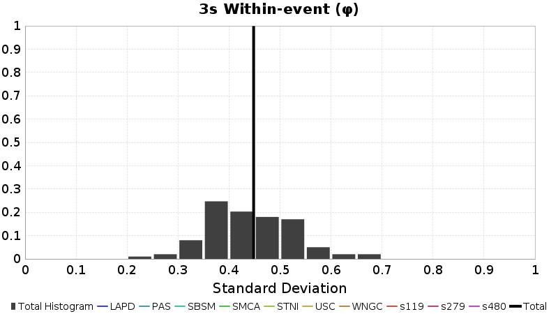 | 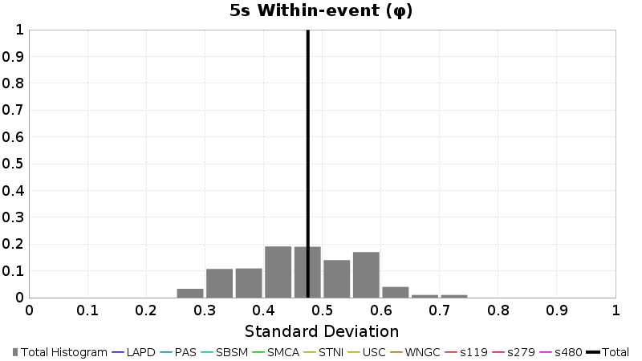 |
| 7.5s | 10s |
| 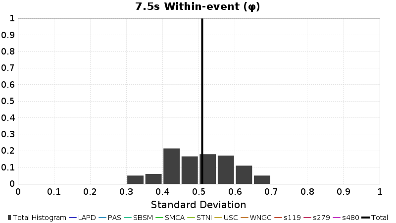 | 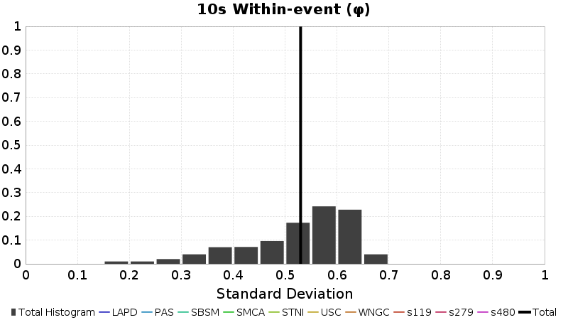 |
Between-events, single-path variability, denoted τ0 in Al Atik 2010, is computed from ground motion residuals where the following quantities are held constant:
and the following quantities vary:
Standard deviation is computed and tabulated separately for each site and distance, then a total standard deviation is computed from all site and distances and reported in the "ALL SITES" row.
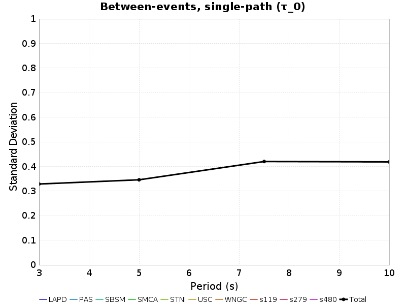
| Site | 3s τ0 | Total | Mean | Median | Range | 5s τ0 | Total | Mean | Median | Range | 7.5s τ0 | Total | Mean | Median | Range | 10s τ0 | Total | Mean | Median | Range |
|---|---|---|---|---|---|---|---|---|---|---|---|---|---|---|---|---|---|---|---|---|
| LAPD | 0.33 | 0.33 | 0.33 | [0.28 0.37] | 0.35 | 0.35 | 0.35 | [0.3 0.41] | 0.42 | 0.42 | 0.41 | [0.4 0.48] | 0.42 | 0.42 | 0.42 | [0.39 0.47] | ||||
| PAS | 0.33 | 0.33 | 0.33 | [0.28 0.37] | 0.35 | 0.35 | 0.35 | [0.3 0.41] | 0.42 | 0.42 | 0.42 | [0.4 0.48] | 0.42 | 0.42 | 0.42 | [0.39 0.47] | ||||
| SBSM | 0.33 | 0.33 | 0.33 | [0.28 0.37] | 0.35 | 0.35 | 0.35 | [0.3 0.41] | 0.42 | 0.42 | 0.41 | [0.4 0.48] | 0.42 | 0.42 | 0.41 | [0.39 0.47] | ||||
| SMCA | 0.33 | 0.33 | 0.33 | [0.28 0.37] | 0.35 | 0.35 | 0.35 | [0.3 0.41] | 0.42 | 0.42 | 0.42 | [0.4 0.48] | 0.42 | 0.42 | 0.42 | [0.39 0.47] | ||||
| STNI | 0.33 | 0.33 | 0.33 | [0.28 0.37] | 0.35 | 0.35 | 0.35 | [0.3 0.41] | 0.42 | 0.42 | 0.42 | [0.4 0.48] | 0.42 | 0.42 | 0.42 | [0.39 0.47] | ||||
| USC | 0.33 | 0.33 | 0.33 | [0.28 0.37] | 0.35 | 0.35 | 0.35 | [0.3 0.41] | 0.42 | 0.42 | 0.42 | [0.4 0.48] | 0.42 | 0.42 | 0.42 | [0.39 0.47] | ||||
| WNGC | 0.33 | 0.33 | 0.33 | [0.28 0.37] | 0.35 | 0.35 | 0.35 | [0.3 0.41] | 0.42 | 0.42 | 0.42 | [0.4 0.48] | 0.42 | 0.42 | 0.42 | [0.39 0.47] | ||||
| s119 | 0.33 | 0.33 | 0.33 | [0.28 0.37] | 0.35 | 0.35 | 0.35 | [0.3 0.41] | 0.42 | 0.42 | 0.42 | [0.4 0.48] | 0.42 | 0.42 | 0.42 | [0.39 0.47] | ||||
| s279 | 0.33 | 0.33 | 0.33 | [0.28 0.37] | 0.35 | 0.35 | 0.35 | [0.3 0.41] | 0.42 | 0.42 | 0.42 | [0.4 0.48] | 0.42 | 0.42 | 0.42 | [0.39 0.47] | ||||
| s480 | 0.33 | 0.33 | 0.33 | [0.28 0.37] | 0.35 | 0.35 | 0.35 | [0.3 0.41] | 0.42 | 0.42 | 0.42 | [0.4 0.48] | 0.42 | 0.42 | 0.42 | [0.39 0.47] | ||||
| ALL SITES | 0.33 | 0.33 | 0.33 | [0.28 0.37] | 0.35 | 0.35 | 0.35 | [0.3 0.41] | 0.42 | 0.42 | 0.42 | [0.4 0.48] | 0.42 | 0.42 | 0.42 | [0.39 0.47] |
| 3s | 5s |
|---|---|
| 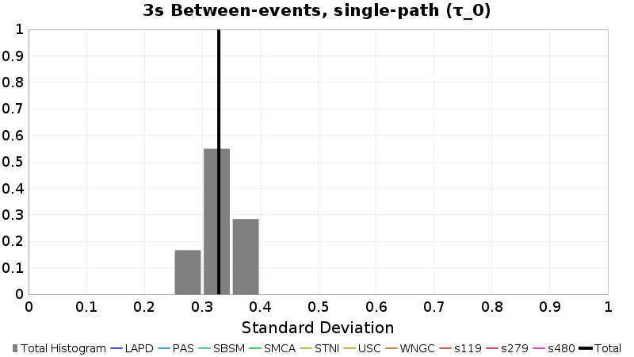 | 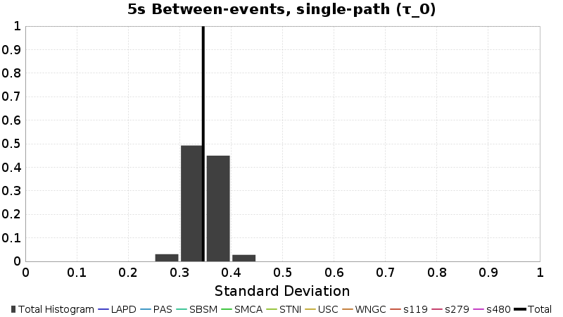 |
| 7.5s | 10s |
| 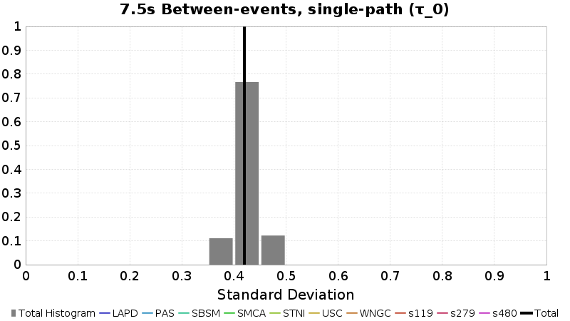 | 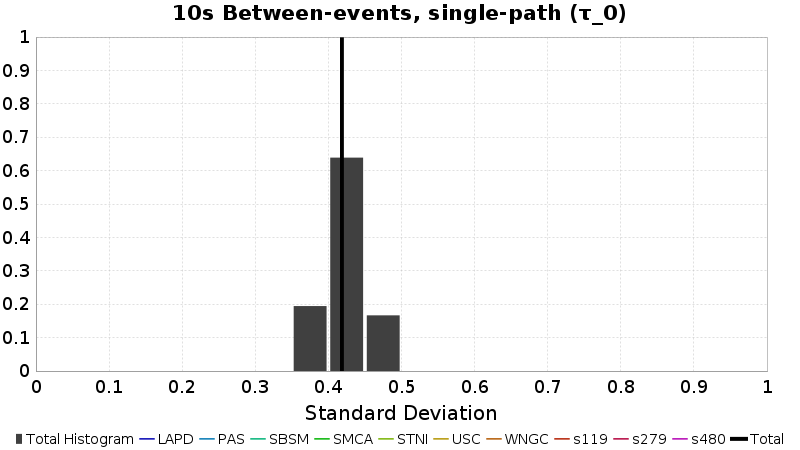 |
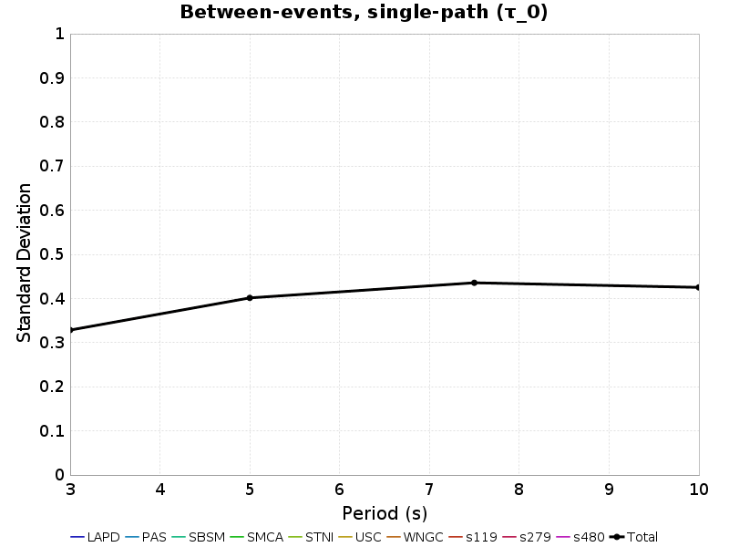
| Site | 3s τ0 | Total | Mean | Median | Range | 5s τ0 | Total | Mean | Median | Range | 7.5s τ0 | Total | Mean | Median | Range | 10s τ0 | Total | Mean | Median | Range |
|---|---|---|---|---|---|---|---|---|---|---|---|---|---|---|---|---|---|---|---|---|
| LAPD | 0.33 | 0.33 | 0.33 | [0.29 0.37] | 0.4 | 0.4 | 0.41 | [0.33 0.47] | 0.44 | 0.44 | 0.45 | [0.35 0.5] | 0.43 | 0.42 | 0.44 | [0.29 0.5] | ||||
| PAS | 0.33 | 0.33 | 0.33 | [0.29 0.37] | 0.4 | 0.4 | 0.41 | [0.33 0.47] | 0.44 | 0.44 | 0.45 | [0.35 0.5] | 0.43 | 0.42 | 0.44 | [0.29 0.5] | ||||
| SBSM | 0.33 | 0.33 | 0.33 | [0.29 0.37] | 0.4 | 0.4 | 0.41 | [0.33 0.47] | 0.44 | 0.44 | 0.45 | [0.35 0.5] | 0.43 | 0.42 | 0.44 | [0.29 0.5] | ||||
| SMCA | 0.33 | 0.33 | 0.33 | [0.29 0.37] | 0.4 | 0.4 | 0.41 | [0.33 0.47] | 0.44 | 0.44 | 0.45 | [0.35 0.49] | 0.43 | 0.42 | 0.44 | [0.29 0.5] | ||||
| STNI | 0.33 | 0.33 | 0.33 | [0.29 0.37] | 0.4 | 0.4 | 0.41 | [0.33 0.47] | 0.44 | 0.44 | 0.45 | [0.35 0.5] | 0.43 | 0.42 | 0.44 | [0.29 0.5] | ||||
| USC | 0.33 | 0.33 | 0.33 | [0.29 0.37] | 0.4 | 0.4 | 0.41 | [0.33 0.47] | 0.44 | 0.44 | 0.45 | [0.35 0.49] | 0.43 | 0.42 | 0.44 | [0.29 0.5] | ||||
| WNGC | 0.33 | 0.33 | 0.33 | [0.29 0.37] | 0.4 | 0.4 | 0.41 | [0.33 0.47] | 0.44 | 0.44 | 0.45 | [0.35 0.5] | 0.43 | 0.42 | 0.44 | [0.29 0.5] | ||||
| s119 | 0.33 | 0.33 | 0.33 | [0.29 0.37] | 0.4 | 0.4 | 0.41 | [0.33 0.47] | 0.44 | 0.44 | 0.45 | [0.35 0.49] | 0.43 | 0.42 | 0.44 | [0.29 0.5] | ||||
| s279 | 0.33 | 0.33 | 0.33 | [0.29 0.37] | 0.4 | 0.4 | 0.41 | [0.33 0.47] | 0.44 | 0.44 | 0.45 | [0.35 0.49] | 0.43 | 0.42 | 0.44 | [0.29 0.5] | ||||
| s480 | 0.33 | 0.33 | 0.33 | [0.29 0.37] | 0.4 | 0.4 | 0.41 | [0.33 0.47] | 0.44 | 0.44 | 0.45 | [0.35 0.5] | 0.43 | 0.42 | 0.44 | [0.29 0.5] | ||||
| ALL SITES | 0.33 | 0.33 | 0.33 | [0.29 0.37] | 0.4 | 0.4 | 0.41 | [0.33 0.47] | 0.44 | 0.44 | 0.45 | [0.35 0.5] | 0.43 | 0.42 | 0.44 | [0.29 0.5] |
| 3s | 5s |
|---|---|
| 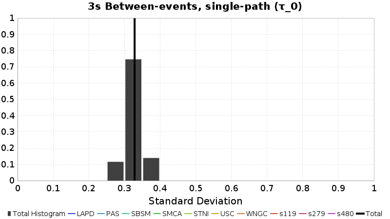 |  |
| 7.5s | 10s |
| 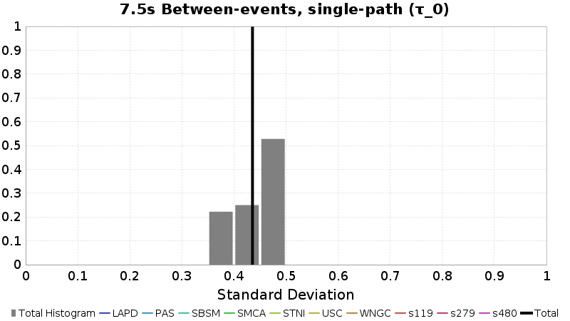 | 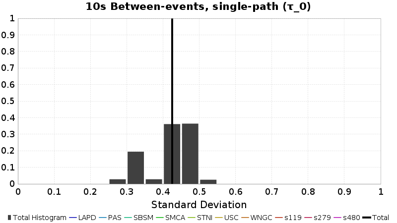 |
Between-events variability, denoted τ in Al Atik 2010, is computed from ground motion residuals where the following quantities are held constant:
and the following quantities vary:
Standard deviation is computed and tabulated separately for each site and distance, then a total standard deviation is computed from all site and distances and reported in the "ALL SITES" row.
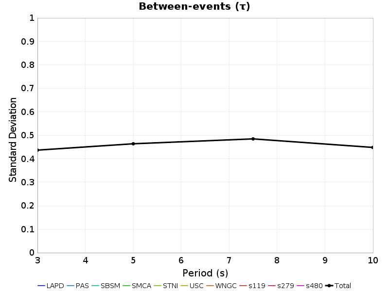
| Site | 3s τ | Total | Mean | Median | Range | 5s τ | Total | Mean | Median | Range | 7.5s τ | Total | Mean | Median | Range | 10s τ | Total | Mean | Median | Range |
|---|---|---|---|---|---|---|---|---|---|---|---|---|---|---|---|---|---|---|---|---|
| LAPD | 0.44 | 0.44 | 0.44 | [0.44 0.44] | 0.46 | 0.46 | 0.46 | [0.46 0.46] | 0.48 | 0.48 | 0.48 | [0.48 0.48] | 0.45 | 0.45 | 0.45 | [0.45 0.45] | ||||
| PAS | 0.44 | 0.44 | 0.44 | [0.44 0.44] | 0.46 | 0.46 | 0.46 | [0.46 0.46] | 0.48 | 0.48 | 0.48 | [0.48 0.48] | 0.45 | 0.45 | 0.45 | [0.45 0.45] | ||||
| SBSM | 0.44 | 0.44 | 0.44 | [0.44 0.44] | 0.46 | 0.46 | 0.46 | [0.46 0.46] | 0.48 | 0.48 | 0.48 | [0.48 0.48] | 0.45 | 0.45 | 0.45 | [0.45 0.45] | ||||
| SMCA | 0.44 | 0.44 | 0.44 | [0.44 0.44] | 0.46 | 0.46 | 0.46 | [0.46 0.46] | 0.49 | 0.49 | 0.49 | [0.49 0.49] | 0.45 | 0.45 | 0.45 | [0.45 0.45] | ||||
| STNI | 0.44 | 0.44 | 0.44 | [0.44 0.44] | 0.46 | 0.46 | 0.46 | [0.46 0.46] | 0.49 | 0.49 | 0.49 | [0.49 0.49] | 0.45 | 0.45 | 0.45 | [0.45 0.45] | ||||
| USC | 0.44 | 0.44 | 0.44 | [0.44 0.44] | 0.46 | 0.46 | 0.46 | [0.46 0.46] | 0.49 | 0.49 | 0.49 | [0.49 0.49] | 0.45 | 0.45 | 0.45 | [0.45 0.45] | ||||
| WNGC | 0.44 | 0.44 | 0.44 | [0.44 0.44] | 0.46 | 0.46 | 0.46 | [0.46 0.46] | 0.49 | 0.49 | 0.49 | [0.49 0.49] | 0.45 | 0.45 | 0.45 | [0.45 0.45] | ||||
| s119 | 0.44 | 0.44 | 0.44 | [0.44 0.44] | 0.46 | 0.46 | 0.46 | [0.46 0.46] | 0.48 | 0.48 | 0.48 | [0.48 0.48] | 0.45 | 0.45 | 0.45 | [0.45 0.45] | ||||
| s279 | 0.44 | 0.44 | 0.44 | [0.44 0.44] | 0.46 | 0.46 | 0.46 | [0.46 0.46] | 0.48 | 0.48 | 0.48 | [0.48 0.48] | 0.45 | 0.45 | 0.45 | [0.45 0.45] | ||||
| s480 | 0.44 | 0.44 | 0.44 | [0.44 0.44] | 0.46 | 0.46 | 0.46 | [0.46 0.46] | 0.48 | 0.48 | 0.48 | [0.48 0.48] | 0.45 | 0.45 | 0.45 | [0.45 0.45] | ||||
| ALL SITES | 0.44 | 0.44 | 0.44 | [0.44 0.44] | 0.46 | 0.46 | 0.46 | [0.46 0.46] | 0.48 | 0.48 | 0.48 | [0.48 0.49] | 0.45 | 0.45 | 0.45 | [0.45 0.45] |
| 3s | 5s |
|---|---|
| 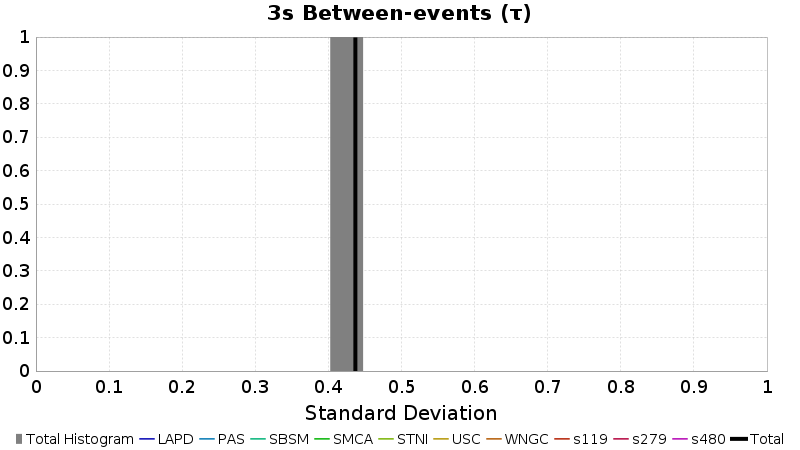 | 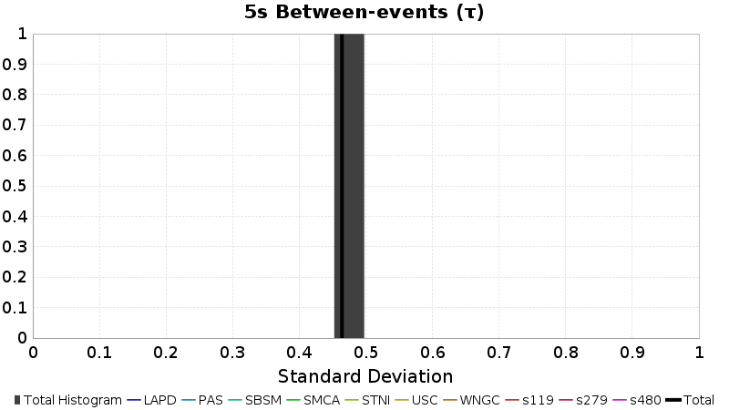 |
| 7.5s | 10s |
| 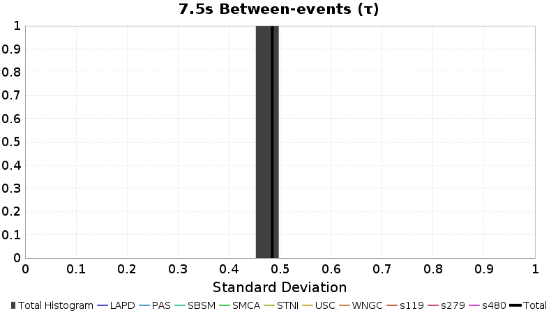 | 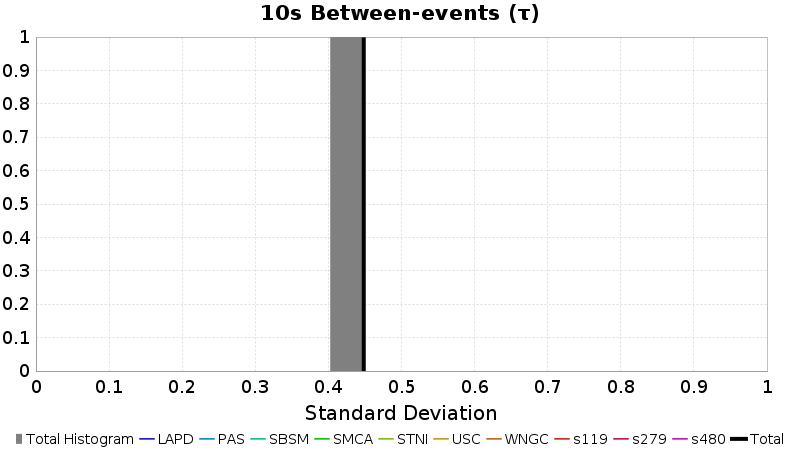 |
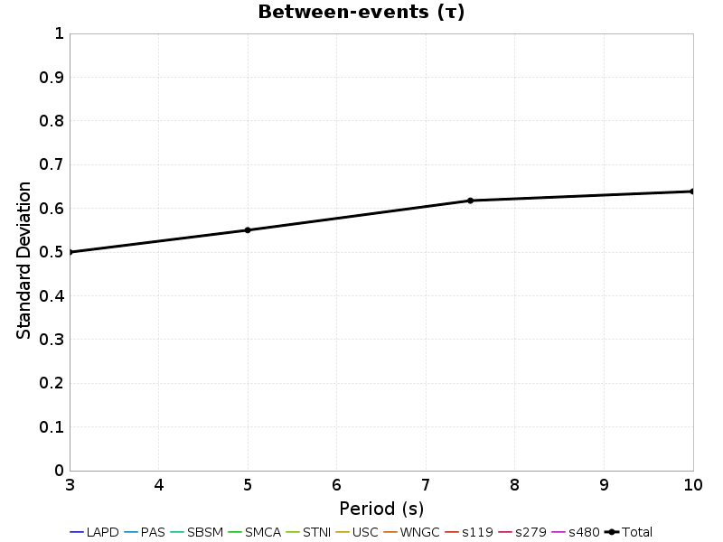
| Site | 3s τ | Total | Mean | Median | Range | 5s τ | Total | Mean | Median | Range | 7.5s τ | Total | Mean | Median | Range | 10s τ | Total | Mean | Median | Range |
|---|---|---|---|---|---|---|---|---|---|---|---|---|---|---|---|---|---|---|---|---|
| LAPD | 0.5 | 0.5 | 0.5 | [0.5 0.5] | 0.55 | 0.55 | 0.55 | [0.55 0.55] | 0.62 | 0.62 | 0.62 | [0.62 0.62] | 0.64 | 0.64 | 0.64 | [0.64 0.64] | ||||
| PAS | 0.5 | 0.5 | 0.5 | [0.5 0.5] | 0.55 | 0.55 | 0.55 | [0.55 0.55] | 0.62 | 0.62 | 0.62 | [0.62 0.62] | 0.64 | 0.64 | 0.64 | [0.64 0.64] | ||||
| SBSM | 0.5 | 0.5 | 0.5 | [0.5 0.5] | 0.55 | 0.55 | 0.55 | [0.55 0.55] | 0.62 | 0.62 | 0.62 | [0.62 0.62] | 0.64 | 0.64 | 0.64 | [0.64 0.64] | ||||
| SMCA | 0.5 | 0.5 | 0.5 | [0.5 0.5] | 0.55 | 0.55 | 0.55 | [0.55 0.55] | 0.62 | 0.62 | 0.62 | [0.62 0.62] | 0.64 | 0.64 | 0.64 | [0.64 0.64] | ||||
| STNI | 0.5 | 0.5 | 0.5 | [0.5 0.5] | 0.55 | 0.55 | 0.55 | [0.55 0.55] | 0.62 | 0.62 | 0.62 | [0.62 0.62] | 0.64 | 0.64 | 0.64 | [0.64 0.64] | ||||
| USC | 0.5 | 0.5 | 0.5 | [0.5 0.5] | 0.55 | 0.55 | 0.55 | [0.55 0.55] | 0.62 | 0.62 | 0.62 | [0.62 0.62] | 0.64 | 0.64 | 0.64 | [0.64 0.64] | ||||
| WNGC | 0.5 | 0.5 | 0.5 | [0.5 0.5] | 0.55 | 0.55 | 0.55 | [0.55 0.55] | 0.62 | 0.62 | 0.62 | [0.62 0.62] | 0.64 | 0.64 | 0.64 | [0.64 0.64] | ||||
| s119 | 0.5 | 0.5 | 0.5 | [0.5 0.5] | 0.55 | 0.55 | 0.55 | [0.55 0.55] | 0.62 | 0.62 | 0.62 | [0.62 0.62] | 0.64 | 0.64 | 0.64 | [0.64 0.64] | ||||
| s279 | 0.5 | 0.5 | 0.5 | [0.5 0.5] | 0.55 | 0.55 | 0.55 | [0.55 0.55] | 0.62 | 0.62 | 0.62 | [0.62 0.62] | 0.64 | 0.64 | 0.64 | [0.64 0.64] | ||||
| s480 | 0.5 | 0.5 | 0.5 | [0.5 0.5] | 0.55 | 0.55 | 0.55 | [0.55 0.55] | 0.62 | 0.62 | 0.62 | [0.62 0.62] | 0.64 | 0.64 | 0.64 | [0.64 0.64] | ||||
| ALL SITES | 0.5 | 0.5 | 0.5 | [0.5 0.5] | 0.55 | 0.55 | 0.55 | [0.55 0.55] | 0.62 | 0.62 | 0.62 | [0.62 0.62] | 0.64 | 0.64 | 0.64 | [0.64 0.64] |
| 3s | 5s |
|---|---|
| 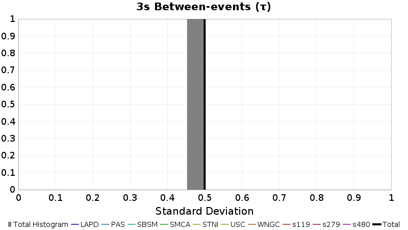 | 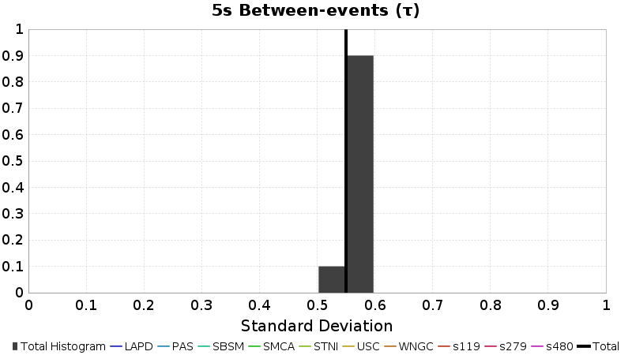 |
| 7.5s | 10s |
| 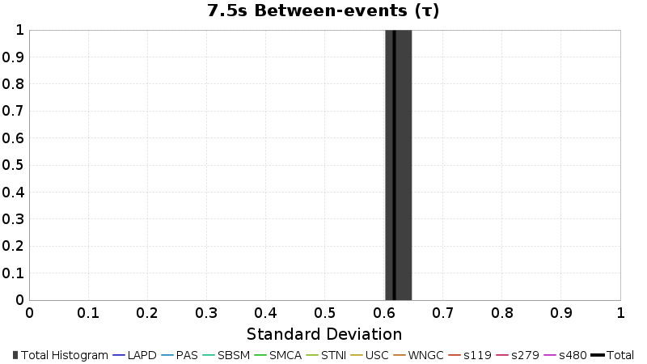 |
Site-to-site variability, denoted φS2S in Al Atik 2010, is computed from ground motion residuals where the following quantities are held constant:
and the following quantities vary:
Standard deviation is computed and tabulated separately for each distance, then a total standard deviation is computed from all distances and reported in the "ALL SITES" row.
| 3s φS2S | Total | Mean | Median | Range | 5s φS2S | Total | Mean | Median | Range | 7.5s φS2S | Total | Mean | Median | Range | 10s φS2S | Total | Mean | Median | Range |
|---|---|---|---|---|---|---|---|---|---|---|---|---|---|---|---|---|---|---|---|
| 0.01 | 0.01 | 0 | [0 0.06] | 0 | 0 | 0 | [0 0.04] | 0 | 0 | 0 | [0 0.03] | 0 | 0 | 0 | [0 0.02] |
| 3s | 5s |
|---|---|
| 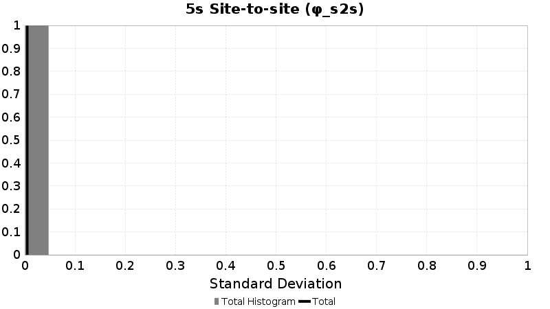 | |
| 7.5s | 10s |
| 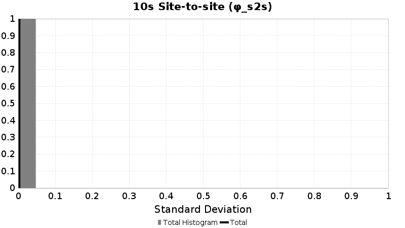 |
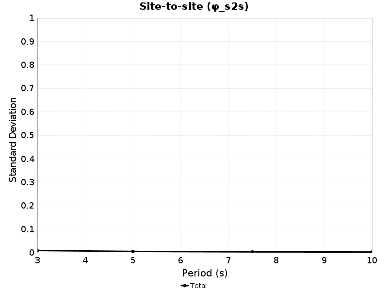
| 3s φS2S | Total | Mean | Median | Range | 5s φS2S | Total | Mean | Median | Range | 7.5s φS2S | Total | Mean | Median | Range | 10s φS2S | Total | Mean | Median | Range |
|---|---|---|---|---|---|---|---|---|---|---|---|---|---|---|---|---|---|---|---|
| 0.01 | 0.01 | 0 | [0 0.1] | 0.01 | 0 | 0 | [0 0.06] | 0 | 0 | 0 | [0 0.04] | 0 | 0 | 0 | [0 0.04] |
| 3s | 5s |
|---|---|
| 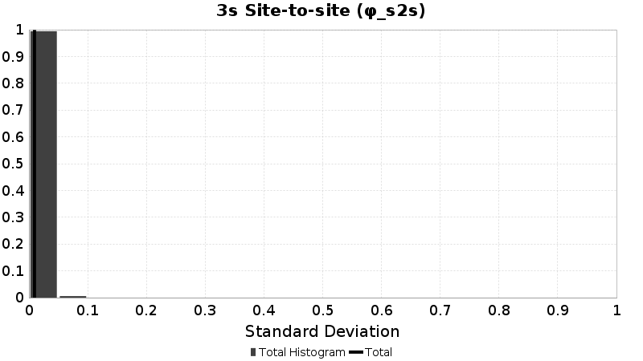 | |
| 7.5s | 10s |